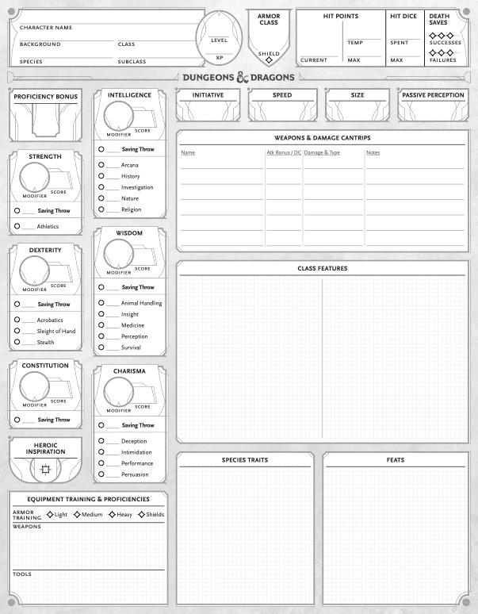

Character Creation
Creating a character in Dungeons and Dragons involves several steps, including choosing a race, class, and background. Players can customize their characters with unique traits, abilities, and backstories to enhance their role-playing experience.
It's important to collaborate with your Dungeon Master (DM) during character creation to ensure your character fits into the campaign world and story.
Your Character
Your class has a lot to do with the abilities you can choose for your character. Each class offers unique features and skills that can shape your character's role in the party. Your race can also change the languages you have available
Consider how your character's background influences their motivations and interactions with other characters. A well-developed backstory can add depth to your role-playing experience.
Talk to your DM
Your Dungeon Master (DM) is your best resource for character creation and development. Don't hesitate to reach out to them with questions or for guidance!